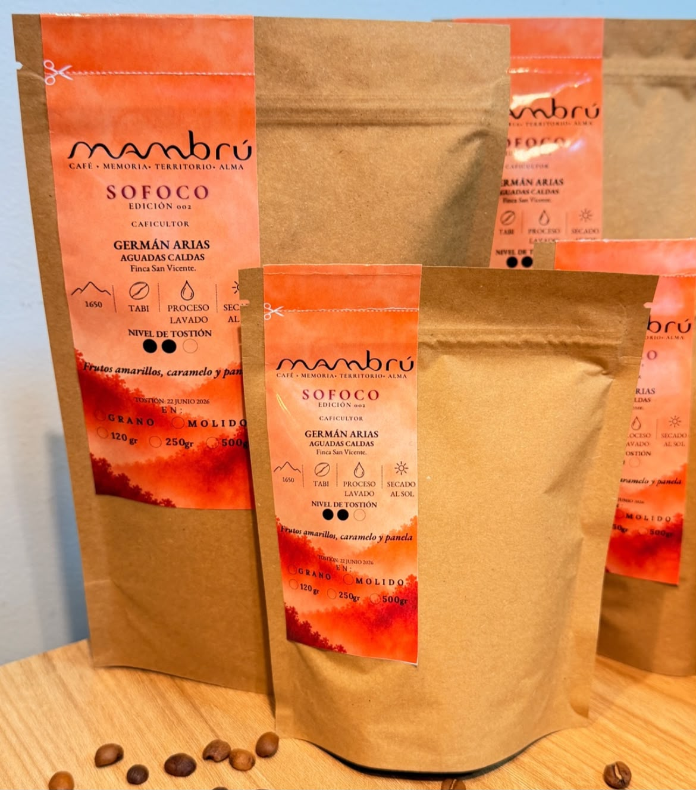
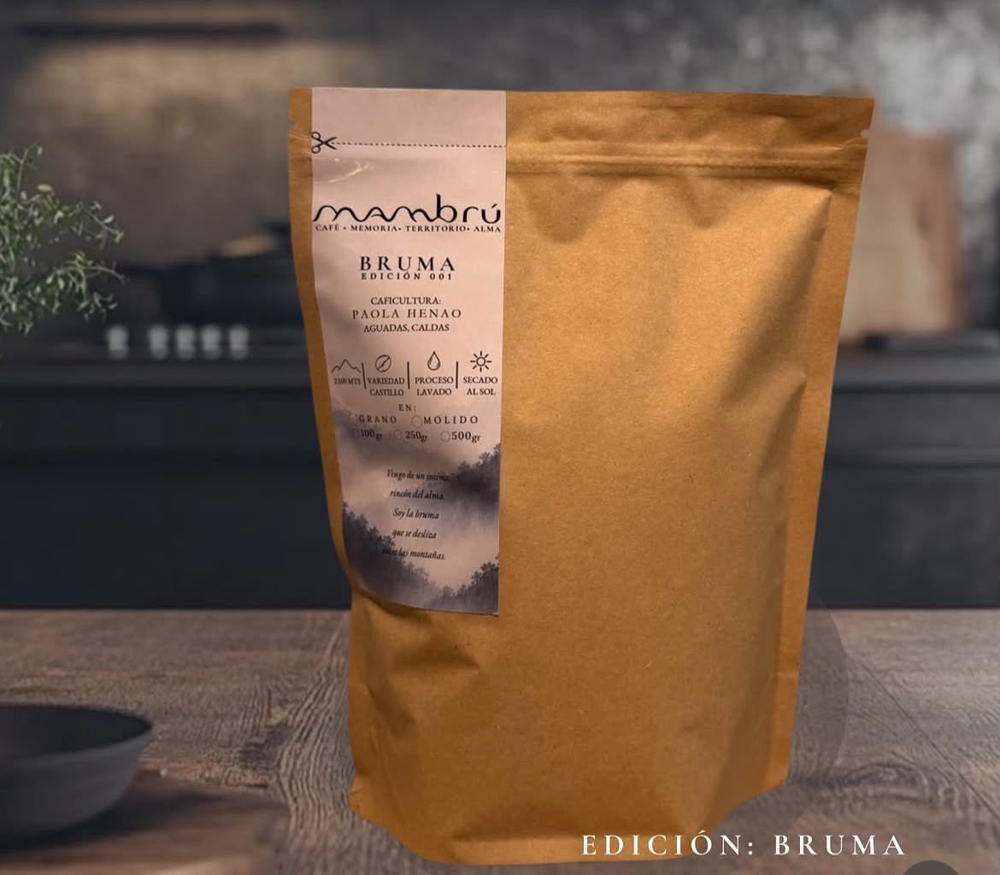
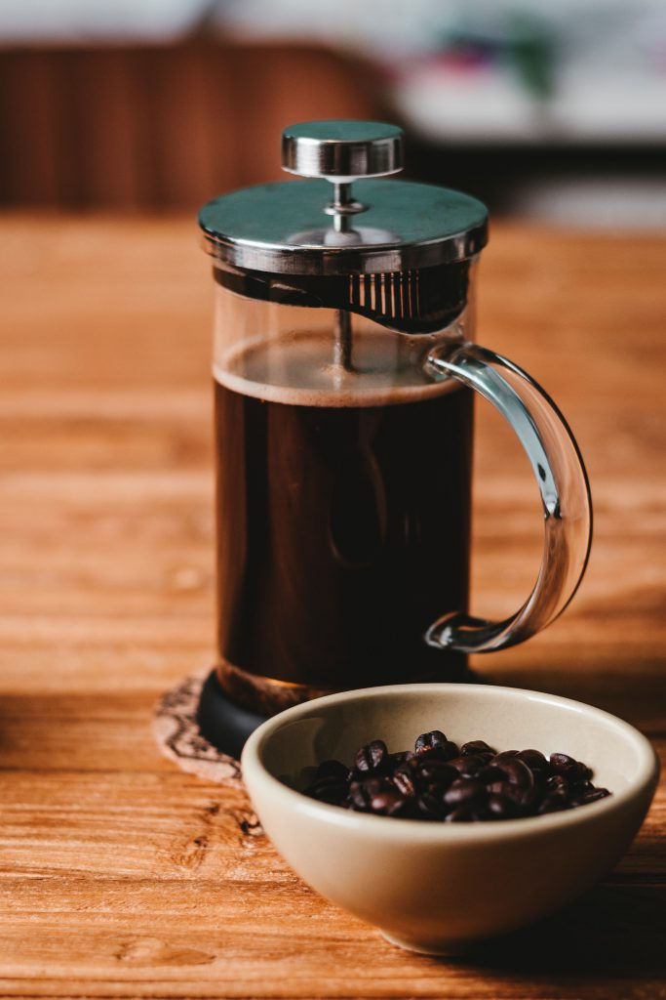
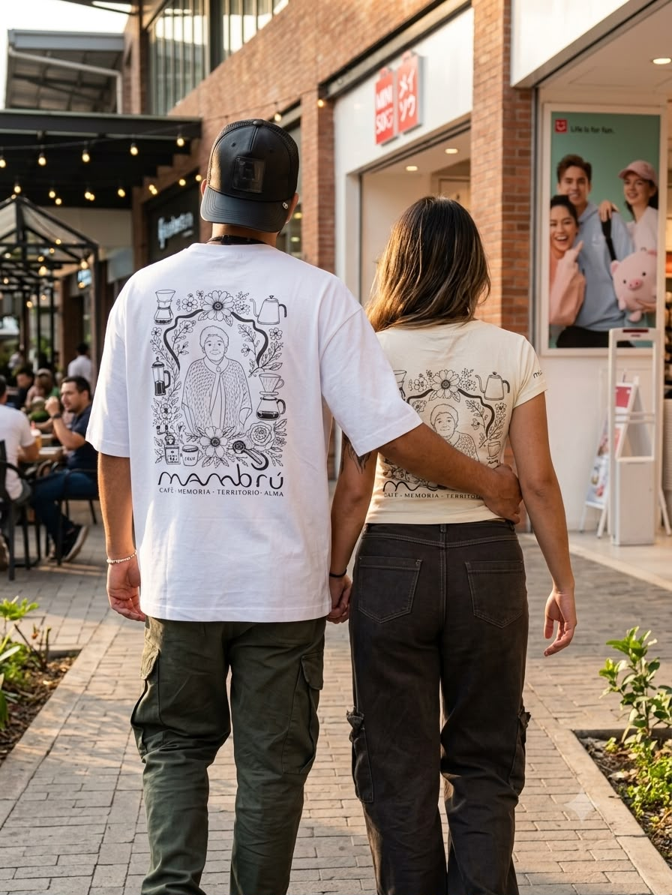
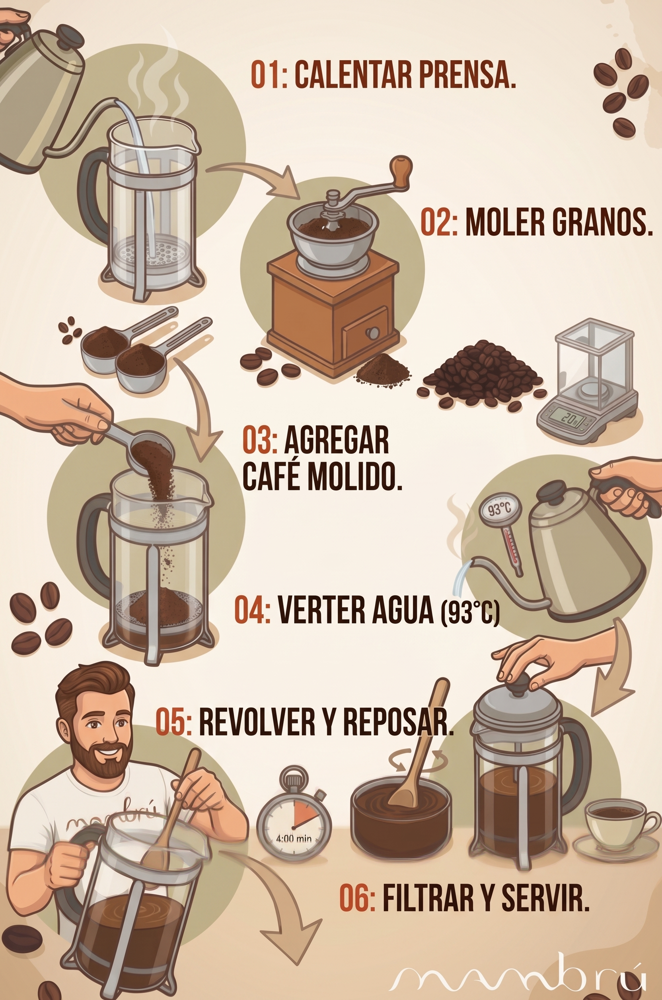

Edición 002Sofoco
📍 Aguadas, Caldas
Notas: Amarillo, caramelo y panela.
Cafés cultivados con el alma, listos para tu taza.

Edición 002📍 Aguadas, Caldas
Notas: Amarillo, caramelo y panela.

Especial📍 Jardín, Antioquia
Proceso: Lavado tradicional.

Accesorio⚙️ 600ml / Acero y Vidrio
El método ideal para resaltar el cuerpo de tu café.
Un vistazo a nuestros talleres, actividades sensoriales y catas exclusivas.
 Familiar
Familiar
🎈 Niños y Chocolate
Actividades sensoriales creativas y divertidas con café y chocolate.
 Educativo
Educativo
📚 Cultura y Procesos
Espacios educativos para dominar características, aromas y preparación.
 Sensorial
Sensorial
✨ Degustación
Descubre y aprende a identificar matices, aromas y sabores únicos.

En Mambrú no solo tostamos granos; rescatamos la tradición de nuestras montañas. Cada taza es un viaje directo a los cafetales colombianos, cultivados con respeto por la tierra y pasión por nuestra gente.
Somos una marca joven, pero con un respeto absoluto por el café de especialidad. Sin rodeos, puro sabor.
Prueba nuestra historiaPara extraer el alma de nuestro café, te recomendamos la proporción ideal. Usa una gramera para ser un verdadero barista en casa.
